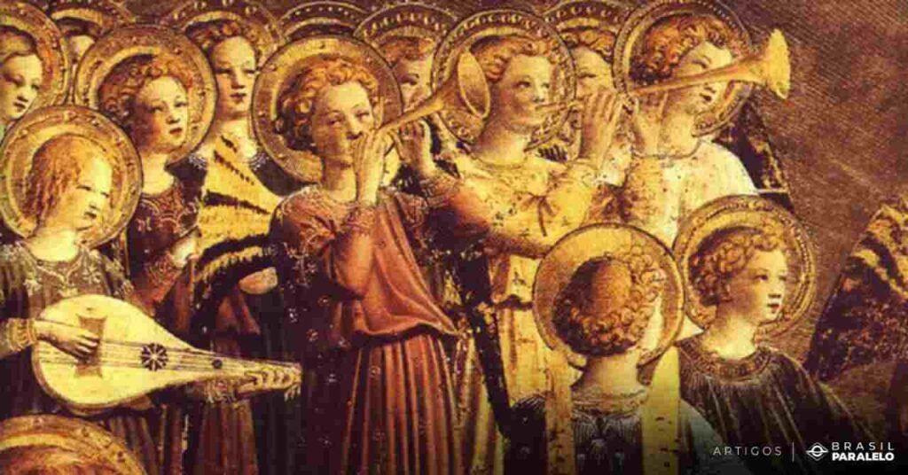

origem
A história da música é antiga, sendo que nos primeiros tempos a curiosidade do homem fez ele se aventurar aos elementos da natureza e conectar-se com os sons que o próprio corpo pode reverberar. É um tipo de arte que trabalha em conjunto com o ritmo, a melodia e a voz. Podendo fazer com que o nosso cérebro absorva as ondas sonoras e nos faça reativar emoções trazendo memórias da vida em que as músicas estiveram presentes.
